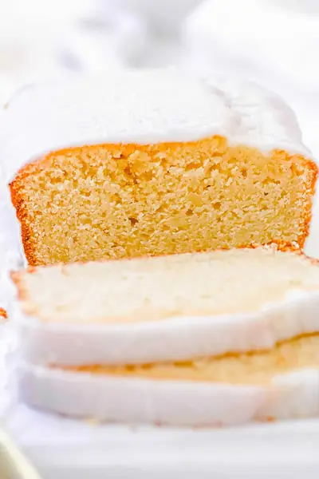

Vegan Pound Cake

Ingredients
- 2 cups all purpose flour
- 2 tsp baking powder
- 1 cup sugar
- ⅛ tsp salt
- ½ cup melted vegan butter
- 2 tbsp vanilla extract
- 1 cup vegan sour cream
- ⅓ cup unsweetened almond milk
- 1 cup powdered sugar
- 1-2 tbsp unsweetened almond milk
Steps
- Preheat the oven to 320 degrees F / 160 C. Line a 9” x 5” loaf pan with baking paper.
- Whisk together the flour, baking powder, sugar and salt. Set aside.
- In a separate bowl whisk together the melted vegan butter, vanilla extract, vegan sour cream and almond milk.
- Pour the wet ingredients into the dry and mix until combined. Do not over mix the batter.
- Transfer the batter to the prepared tin and bake in the oven for 50-60 minutes or until an inserted skewer comes out clean. After cooking for 30 minutes place a sheet of foil over the top of the cake to stop it from browning too quickly.
- When cooked, remove and allow to cool in the tin for 10 minutes before cooling completely on a cooling rack.
- To prepare the glaze, mix the powdered sugar and 1 tbsp almond milk together in a small bowl until smooth. Adjust thickness by adding more almond milk if you’d like a thinner glaze.
- Once the cake is completely cold drizzle the glaze over top.
- Store the cake in an airtight container in the fridge for up to 5 days.
Recipe by Anjali Shah · The Picky Eater, from The Picky Eater. Saved here for personal use; the original has the full notes, tips and photos. Open original